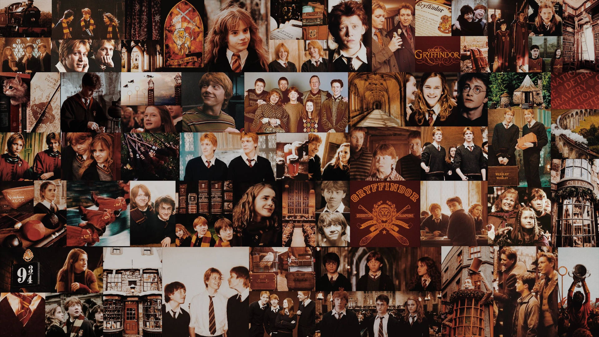

La Familia Weasley: Los Magos Más Queridos de Hogwarts
La familia Weasley es una de las más queridas y admiradas en el universo de Harry Potter. A pesar de no pertenecer a una familia de sangre pura ni tener grandes riquezas, los Weasley se destacan por su bondad, valentía y el fuerte lazo familiar que los une. Desde los padres, Arthur y Molly, hasta los siete hijos: Bill, Charlie, Percy, Fred, George, Ron y Ginny, esta familia tiene una historia que abarca generaciones. A lo largo de la saga, su presencia en la vida de Harry Potter fue crucial, siendo una fuente constante de apoyo y amor, especialmente cuando Harry se encontró sin una familia propia. La naturaleza cálida de la familia Weasley ha tocado los corazones de los fanáticos, convirtiéndolos en una de las familias más representativas del mundo mágico.
Teoría 1: La conexión con la magia antigua
Una de las teorías más interesantes que los fanáticos han desarrollado a lo largo de los años es la posibilidad de que los Weasley tengan alguna conexión con las antiguas casas de magia, como Gryffindor. Aunque no pertenecen a una familia de sangre pura como los Malfoy o los Black, los Weasley tienen un fuerte sentido del honor y la valentía que se alinea con las características de los fundadores de Hogwarts. La teoría más popular sugiere que la magia de la familia Weasley, aunque no particularmente poderosa en comparación con otras familias, está profundamente enraizada en la historia de la magia. Esto podría explicar la habilidad de la familia para mantener una presencia influyente en la comunidad mágica, a pesar de ser considerados "familia de sangre mestiza" o "muggle". Bill Weasley, el mayor de los hijos, por ejemplo, demuestra una gran valentía al trabajar para el Ministerio de Magia y enfrentarse a las criaturas más peligrosas del mundo mágico, lo que podría ser un indicio de la conexión ancestral que se rumorea.
Teoría 2: ¿Por qué Ron no destaca en magia?
Una pregunta recurrente entre los fanáticos es por qué Ron Weasley, uno de los personajes principales de la saga, no parece tener las habilidades mágicas excepcionales de sus hermanos mayores. Aunque Ron muestra ser muy valiente y tener una gran lealtad, su desempeño académico en la escuela de magia no es tan destacado como el de Bill, Percy o incluso Ginny. La teoría más común es que Ron no sobresale en magia por su falta de confianza en sí mismo, lo que a menudo lo hace sentir como un "hermano pequeño" entre una familia de genios mágicos. Sin embargo, lo que muchos fanáticos no consideran es que, a lo largo de la saga, Ron demuestra ser increíblemente valiente y perspicaz, usando su ingenio en varias situaciones críticas. Su valía como mago no se mide solo por su destreza mágica, sino por su capacidad para mantenerse firme en momentos de crisis. A lo largo de las aventuras, Ron se convierte en un gran amigo y aliado para Harry, ayudándolo a enfrentar desafíos que otros magos más poderosos podrían haber evitado.
Teoría 3: El legado de los gemelos Weasley
Fred y George Weasley, los gemelos traviesos, han dejado una huella imborrable en el mundo mágico con su tienda de bromas mágicas, "Sortilegios Weasley". Lo que comenzó como una simple idea de broma se transformó en un próspero negocio que cambió el panorama de la magia comercial en el mundo de los magos. La teoría más interesante sobre los gemelos Weasley es que si Fred no hubiera muerto en la batalla de Hogwarts, su tienda podría haber llegado a convertirse en un emporio de la magia, rivalizando con los negocios más grandes del mundo mágico. Los gemelos tenían una gran habilidad para crear artefactos mágicos innovadores y estaban en constante búsqueda de nuevas formas de hacerle la vida más divertida a los magos. La trágica muerte de Fred dejó un vacío no solo en el corazón de George, sino también en el potencial que la tienda tenía para crecer aún más. Sin embargo, después de la muerte de Fred, George continuó con la tienda, lo que algunos fanáticos creen que es una forma de honrar a su hermano y mantener viva la creatividad que ambos compartían.
Rumor 1: La conexión con los Potter
Desde el momento en que Harry Potter se unió a la familia Weasley, muchos fanáticos han especulado sobre una posible conexión más profunda entre las dos familias. Aunque Harry es huérfano y fue acogido por los Weasley, algunos rumores sugieren que hay más en la relación de lo que parece. La teoría más intrigante es que los Weasley y los Potter podrían tener un vínculo ancestral que va más allá de la amistad entre James Potter y Arthur Weasley. Algunos fanáticos creen que la familia Weasley tiene raíces en las casas fundadoras de Hogwarts, lo que vincularía a Harry y a los Weasley más estrechamente de lo que se ha mencionado en los libros. Sin embargo, como siempre en el mundo de Harry Potter, muchos de estos rumores permanecen sin respuesta, alimentando la imaginación de los fanáticos que siguen buscando pistas en cada rincón del universo mágico.
Rumor 2: El futuro de la familia Weasley
Una de las preguntas que sigue rondando entre los fanáticos es: ¿qué pasará con la familia Weasley después de la saga? A lo largo de los años, hemos visto cómo la familia crece y se adapta a los cambios en el mundo mágico, desde el matrimonio de Bill con Fleur hasta los hijos de Ron y Hermione. Se especula mucho sobre el futuro de los hijos de Ron y Hermione, especialmente después de los eventos de "Las Reliquias de la Muerte". Algunos fanáticos creen que los hijos de Ron, Hugo y Rose, podrían seguir los pasos de sus padres en el Ministerio de Magia, mientras que los hijos de Ginny y Harry, como Albus Severus Potter, podrían tener sus propias aventuras en el mundo mágico. La idea de que la próxima generación de la familia Weasley continúe con el legado de sus padres en una nueva era del mundo mágico es una posibilidad emocionante que ha mantenido la especulación viva entre los fanáticos.
En conclusión, la familia Weasley ha dejado una marca indeleble en la historia del mundo mágico. No solo son queridos por su valentía y dedicación a los demás, sino que representan muchos de los valores que hacen a la saga de Harry Potter tan especial. Desde su humildad hasta su gran sentido del humor, los Weasley siguen siendo una de las familias más emblemáticas del universo de J.K. Rowling. A lo largo de los años, la conexión entre los Weasley y los Potter ha crecido, y con ella, las teorías y rumores sobre su legado mágico. ¿Quién sabe qué nuevas sorpresas nos depara el futuro para los descendientes de los Weasley? ¡Solo el tiempo lo dirá!